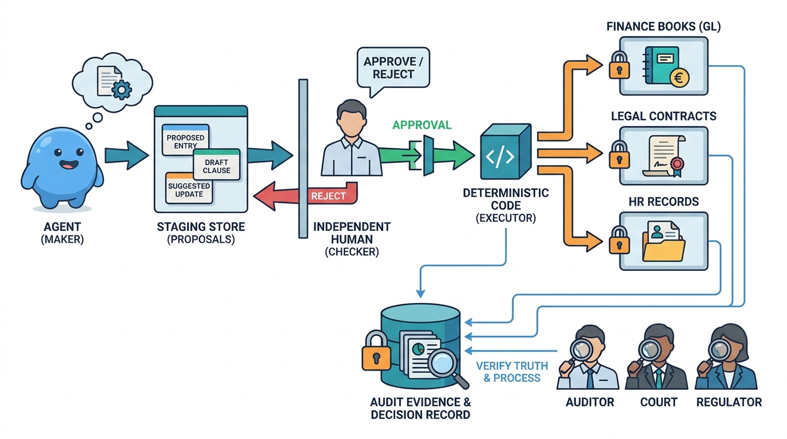

Part XI — DOMAINS: How Requirements Change Across Domains
Back Office: Finance, Legal and HR Agents
AI-assisted: written with Claude Code, images generated with the Gemini API. How this works

Image generated by Google Gemini (gemini-3-pro-image-preview)